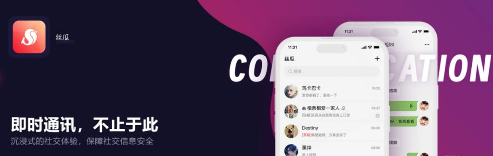

丝瓜聊天怎么登录？
打开丝瓜聊天APP，点击“登录”按钮，输入已注册的手机号码和密码，或使用验证码快捷登录。若启用了实名认证或绑定设备，系统可能要求额外验证。登录成功后即可进入主界面使用。

丝瓜聊天登录方式有哪些
使用手机号码和密码登录
进入登录页面选择密码登录： 打开丝瓜聊天APP后，在首页点击“登录”按钮，系统默认显示快捷方式，可手动切换至“使用密码登录”选项，进入输入界面操作更明确，更适合常规用户使用。
输入注册时使用的手机号码和密码： 在登录框中填写已注册的手机号码，并输入对应的登录密码，确保号码与账号绑定一致，密码输入无误，避免因频繁错误触发安全验证或被锁定。
确认登录后进入主界面： 输入正确信息后点击“登录”按钮，系统会进行验证，成功后自动跳转至首页或聊天主界面，无需再次验证身份，适合经常使用的设备和网络环境，使用体验稳定流畅。
使用短信验证码快速登录
选择“验证码登录”方式： 在登录界面点击“验证码登录”选项，系统将切换到使用短信验证码验证的页面，无需输入密码，适合临时登录或忘记密码时使用，方便快捷不需记忆复杂密码。
输入手机号码并获取验证码： 在验证码登录页面输入注册时的手机号，点击“获取验证码”按钮，系统会通过短信发送六位数验证码至该号码，一般几秒内即可收到，验证码有效期通常为五分钟。
填写验证码并完成登录： 将接收到的验证码输入到对应输入框中，点击“登录”按钮提交，系统验证无误后会自动登录账号，整个过程无需输入密码，适用于快速、安全的移动登录场景。
忘记密码如何重新登录
找回密码的操作步骤
点击登录页面的“忘记密码”链接： 打开丝瓜聊天APP，在登录界面下方点击“忘记密码”，系统会自动跳转到密码找回页面，该入口通常位置明显，方便用户快速操作，特别适用于首次遇到此类问题的用户。
输入绑定手机号并获取验证码： 在找回密码页面，输入注册时使用的手机号码，点击“获取验证码”，系统会通过短信发送一组验证码，用于验证手机号归属和账号安全性，验证码有效期一般为五分钟，请尽快填写。
设置新密码并完成验证： 验证码输入无误后，系统会进入新密码设置界面，用户可重新设置一个符合要求的新密码，密码需包含字母和数字，长度不少于8位，确认无误后点击确认保存即可完成密码重置。
修改密码后的登录注意事项
使用新密码重新登录账号： 完成密码重置后返回登录页面，使用新密码和原手机号登录账号，如无其他限制将直接进入主页面，系统不再要求额外验证，提高登录效率和使用便捷性。
避免短时间内频繁修改密码： 短期内频繁修改密码可能被系统视为异常行为，导致账号暂时受限，建议重置密码后稳定使用，避免被误判为非正常登录或被盗用风险，影响正常使用。
及时更新保存的登录信息： 如果曾使用记住密码功能或将旧密码保存在第三方工具中，修改密码后应及时更新相关记录，以免再次登录失败或在其他设备登录时遇到问题，确保信息同步一致。

验证码登录失败的原因
验证码延迟或未收到怎么办
检查手机信号和网络状态： 如果验证码长时间未收到，可能是由于手机信号不佳或网络不稳定导致短信延迟，建议更换位置或切换至Wi-Fi环境，确保设备处于良好连接状态以便接收验证码。
确认号码输入是否正确无误： 有时验证码收不到是因为手机号填写错误或与注册账号不匹配，建议重新检查输入的手机号是否完整、无误，并确保未误填入其他国家或地区前缀。
查看短信被拦截或过滤情况： 某些手机可能会将验证码短信自动归类为垃圾短信或被第三方软件拦截，建议前往短信垃圾箱或通知管理中查看是否被过滤，并关闭短信防骚扰功能重试接收。
多次失败后如何重新获取验证码
等待冷却时间后再次发送： 如果多次尝试获取验证码失败，系统可能会限制短时间内重复请求，用户需等待60秒左右后再尝试点击“重新发送验证码”按钮，以免触发平台的安全防护机制。
尝试重启APP或更换网络： 系统异常或缓存问题也可能导致验证码请求失败，建议退出丝瓜聊天APP后重新启动，或尝试切换Wi-Fi与移动数据网络后再次获取验证码，提高发送成功率。
联系客服寻求技术支持： 若反复尝试仍无法接收验证码，可通过APP内的帮助中心或官方网站联系客服，提供注册手机号等信息，由客服手动验证或协助处理账号登录问题，保障用户权益。

登录后遇到闪退怎么办
清理缓存修复APP异常
进入手机设置清除应用缓存数据： 打开手机设置，找到“应用管理”或“应用信息”中的丝瓜聊天，点击进入后选择“清除缓存”或“清除数据”，可解决因数据冲突或缓存异常导致的闪退问题。
重启手机释放系统资源： 某些设备运行时间过长可能会导致系统资源占用过高，影响APP运行稳定性。建议重启手机以释放内存，重新打开丝瓜聊天，有助于恢复正常登录和使用体验。
关闭后台程序保持运行环境干净： 同时运行多个应用可能造成资源竞争，影响丝瓜聊天的稳定性。登录前可先关闭不必要的后台程序，为丝瓜聊天提供更流畅的运行环境，避免频繁闪退。
卸载重装丝瓜聊天的注意事项
备份聊天记录和账号信息： 卸载APP前请确保已进行数据同步或备份，部分聊天记录可能存储于本地，卸载后将无法恢复，建议登录前绑定账号、手机号并启用云端同步功能。
使用正规渠道重新下载安装包： 卸载后请前往丝瓜聊天官网或各大应用商店（如App Store、华为应用市场等）重新下载安装，确保获取的是官方正版，避免因第三方版本导致兼容性问题。
安装后立即登录验证运行状态： 重新安装完成后建议立即使用原账号登录，确认应用是否仍出现闪退问题。若问题依旧，建议记录机型、系统版本等信息并反馈给官方客服，以获得进一步技术支持。

切换账号登录的操作方法
如何退出当前账号重新登录
打开设置页面找到退出按钮： 登录丝瓜聊天后，点击首页右上角的“个人中心”或“设置”图标，进入设置页面后，向下滑动可找到“退出登录”选项，点击后即可安全退出当前账号。
确认退出并返回登录页面： 系统在点击“退出登录”时通常会弹出确认窗口，用户需点击“确认”以完成退出操作。退出后，APP会自动跳转回登录界面，方便立即输入其他账号信息重新登录。
重新输入另一账号的信息进行登录： 在登录页面，用户可输入另一个已注册的手机号码并选择相应的登录方式（密码或验证码），完成身份验证后即可进入新账号，无需重新安装APP。
多账号切换时避免数据丢失的方法
提前绑定手机号和邮箱保障找回能力： 每个账号都应绑定有效的手机号码与邮箱，这样即使切换过程中出现异常，也可以快速通过找回功能恢复账号，防止信息丢失或无法登录。
定期同步聊天记录或使用云备份功能： 若丝瓜聊天支持聊天记录备份功能，建议在切换账号前手动或自动上传聊天记录至云端，避免因账号切换导致本地数据被清空或覆盖。
避免频繁登录登出操作： 频繁切换账号可能导致系统识别异常，触发安全验证或限制登录权限。建议尽量减少短时间内的频繁切换操作，确保数据加载稳定，保障使用过程中的安全性与连续性。